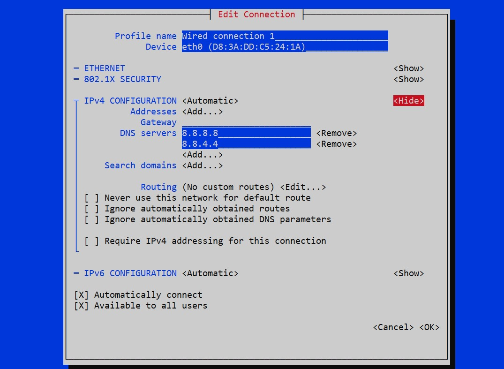
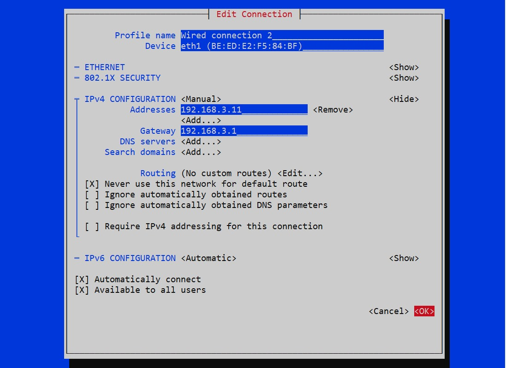

Step 5 - Configure IP
Overview:
Configuring network interfaces (eth0 and
eth1) on the Raspberry Pi involves setting up IP
addresses, gateway, and routing options. eth0 typically
connects to the Wide Area Network (WAN) and may use DHCP for
automatic IP assignment. However, in some cases, a fixed IP address
may be required for eth0. On the other hand,
eth1 connects to a Siemens PLC and requires a static IP
address (192.168.3.11) with a specific gateway
(192.168.3.1). Additionally, eth1 should
never be used as the default route. Network Manager is used to
manage the interfaces, and nmtui provides an
interactive way to configure them.
Why it is Needed:
Configuring network interfaces ensures proper communication between
devices connected to the Raspberry Pi and the network.
eth0 is typically used for WAN connectivity and may
require either automatic or fixed IP assignment, depending on the
network setup. Meanwhile, eth1 connects to a Siemens
PLC and must have a static IP address to maintain consistent
communication. By configuring these interfaces properly, you ensure
reliable network connectivity and prevent potential issues such as
IP conflicts or routing errors.
Steps to Configure Network Interfaces:
Configuring eth0:
Open nmtui by typing nmtui in the terminal
and pressing Enter.
nmtui
-
Navigate to Edit a connection and select Wired connection 1 (assuming eth0 is represented by Wired connection 1).
-
Ensure that IPv4 CONFIGURATION is set to Automatic for DHCP assignment. If a fixed IP address is required for eth0, change it to Manual and provide the desired IP address, subnet mask, and gateway.
-
Check that the options for Routing do not set eth0 as the default route.

Configuring eth1:
Open nmtui by typing nmtui in the terminal
and pressing Enter.
nmtui
-
Navigate to Edit a connection and select Wired connection 2 (assuming eth1 is represented by Wired connection 2).
-
Set IPv4 CONFIGURATION to Manual.
-
Add the static IP address (192.168.3.11) under Addresses.
-
Set the gateway (192.168.3.1) under Gateway.
-
Ensure that the option [X]
Never use this network for default routeis selected to preventeth1from being used as the default route.

Save and Apply Changes:
After configuring both interfaces, navigate to OK and
press Enter to save the changes.
Conclusion
By following these steps, you ensure that eth0 and eth1 on the Raspberry Pi are properly configured with the required IP addresses, gateway settings, and routing options, ensuring reliable network communication.